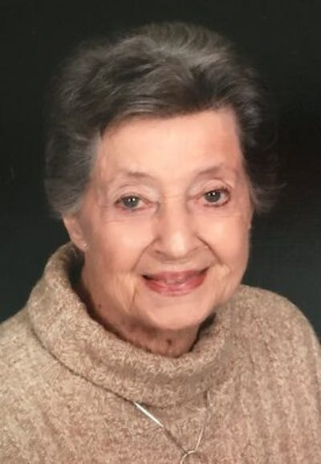
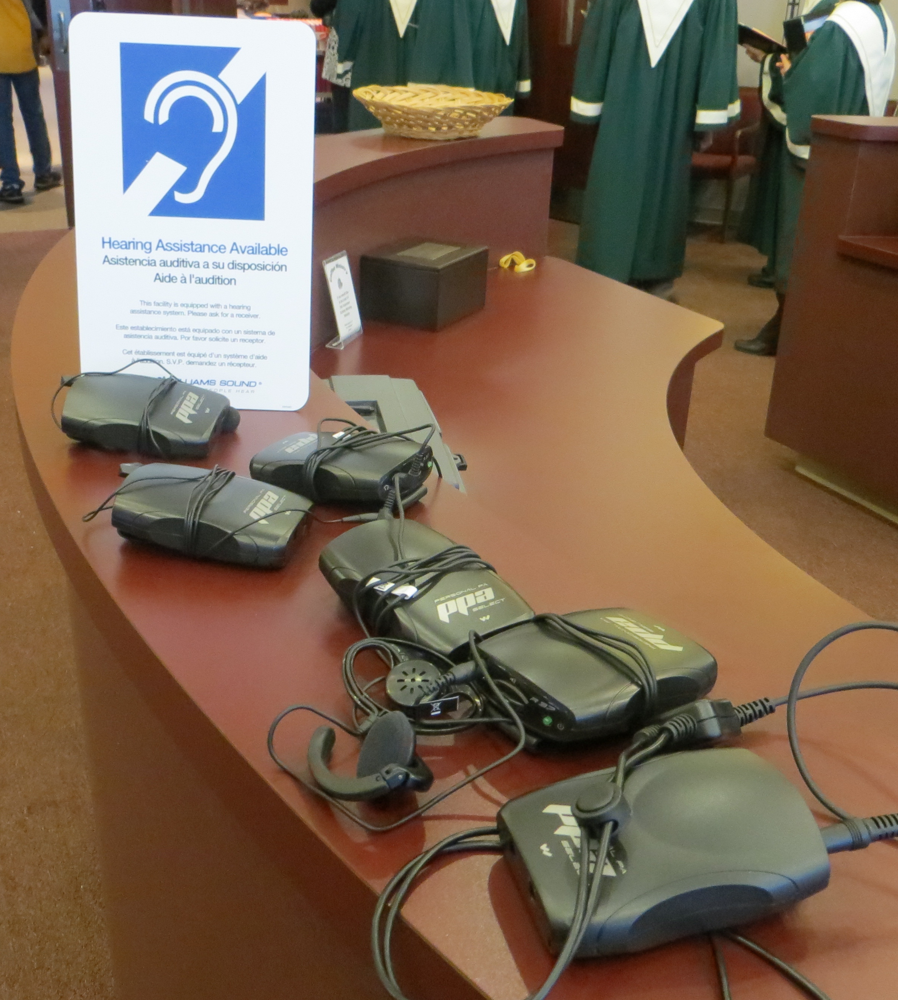

Glen R. Burchby
(June 21, 1924 to Nov. 28, 2012)
Louise Janet Burchby
(January 3, 1928 – August 9, 2021)
Relationship to St. Andrew United Methodist Church:
Both were members of St Andrew since 2009.
Family:
Son - Dale Burchby (Virginia) of San Diego, California.
Daughters - Kathleeen Burchby (Dennis Christiansen) of Milwaukee, WI
Marcia Burchby (George Wood) of Amesville, Ohio
Rita (Thomas) Goerz of West Lafayette, Indiana
Also surviving are seven grandchildren; Melanie, Kevin and Valerie Burchby, Michael and John Wood, Scott Fix and Elizabeth Christiansen.
Recognitions, Activities, Special Interests:
Glen: Glen was an avid reader – especially history with emphasis on World War II. He was a WWII veteran serving in the European theater of Operations, where he fought and was taken prisoner by the Germans in the Battle of the Bulge in December 1944. He was the recipient of four Battle Stars, three Purple Hearts, the Combat Infantry Award and the Bronze Star. Glen had a special interest in veterans affairs and belonged to several veterans organizations. He was past commander of Smoky Mountain Chapter EX-POWS. He volunteered as a docent at the EX-POW Museum in Andersonville, Georgia and spent time with the veterans at the Indiana Veterans Home in West Lafayette.
Louise: Louise was a teacher, dairy farmer, executive secretary, and loving wife, mother, grandmother. She shared with her family her love of birds, travel and the Chicago Cubs. An avid reader and puzzle solver, she was also known to play a very competitive game of Canasta. She grew bountiful gardens and prepared innumerable family meals at a table that was always open to everyone. Louise’s joy of learning was a hallmark of her life and was passed along to her family.
Glen and Louise traveled extensively to all fifty states, all the provinces of Canada, as well as overseas. They were always eager for new experience, exploring museums and meeting new people.
Use of Memorial funds:
Glen: A hearing assistance system for St. Andrew Great Room and cordless microphones for speakers were obtained.

Louise:
RIP Medical Debt and Wood’s Edge Ministry
Obituaries
Glen Burchby
Glen R. Burchby, 88, of West Lafayette, formerly of Newton County,
IN, Iroquois County, IL, and Sevier County, TN, passed away at his home on
Wednesday, November 28, 2012. Born June 21, 1924 in Warsaw, IN, he was preceded
in death by his parents Edwin and Eula (Brown) Burchby and his infant sister Gladys Louise.
Glen's 64-year marriage to the love of his life,
Louise (Diesslin) Burchby,
began on August 29, 1948, in LaPorte, IN, and she survives. Also surviving are
his son, Dale Burchby (Virginia)
of San Diego, CA, three daughters, Kathleen Burchby (Dennis Christiansen) of Milwaukee, WI,
Marcia Burchby (George
Wood) of Amesville, OH, and Rita Goerz (Thomas) of West Lafayette, IN, and two
sisters, Joyce Diesslin and Carol Wollert. Also surviving are seven
grandchildren, Melanie, Kevin, and Valerie Burchby, Elizabeth Christiansen, Michael and John Wood, and
Scott Fix.
Glen grew up on a farm near Burket, IN, graduated
from high school at the age of 17, and joined the Army in March, 1943. He
served in the Army for three years, and saw combat in the European theater during
WWII. While in combat he was a sniper with the 7th Armored Division. During the
Battle of the Bulge in December, 1944, he was taken prisoner by the Germans and
was held as a POW until the end of the war in Europe.
He was the recipient of four Battle Stars, three
Purple Hearts, the Combat Infantry Award, and the Bronze Star. He remained
dedicated to serving the country and to preserving the history of the country's
combat veterans. He was a former commander of the Smoky Mountain Chapter of
Ex-POWs, and a member of the DAV, American Legion, and the Military Order of
the Purple Heart. He volunteered as a docent at the POW Museum, Andersonville,
GA, and as a frequent visitor to the residents of the Indiana Veteran's Home in
West Lafayette.
Following his return from overseas, Glen met and
married Louise, and followed her to Purdue University, where he attained a
Bachelor of Science degree in Agriculture under the GI Bill. Upon graduation in
1950, he taught Agriculture in high school and to returning veterans.
In 1952 Glen and Louise began a career as full-time dairy
farmers. They raised their four children on the farm, instilling the value of
hard work by constant example, but also making time for homemade ice cream,
horseback riding, shooting, card games, inquisitive conversation, plus a wide
range of life lessons, from history to hay bale stacking.
After 30 years of farming, they began a new
chapter of their lives in Kodak, TN. Glen worked for the Sevier County school system as a
school bus driver and courier. He and Louise filled the 29 years in TN hosting
friends and family and traveling extensively. Every day was an opportunity for
exploration, adventure, and education. Glen's warm personality and genuine
curiosity made every stranger a friend.
In 2009 Glen and Louise returned to their Hoosier roots,
settling in West Lafayette. He continued with volunteer work and became a
member of St. Andrew United Methodist Church. He continued his voracious
reading, especially history.
Glen will be greatly missed by the many whose lives
he touched, as a loving husband and father, engaged grandfather, devoted church
member, active veteran, and good neighbor. His charm, optimism, and generous
nature continued to draw people to him to his last day, including the devoted caregivers
at IU Health Arnett Hospital and IU Health Hospice.
Visitation will be from 3 to 5 p.m. Saturday at
St. Andrew United Methodist Church, West Lafayette, with funeral service
following at 5 p.m., Reverend Tim Burchill officiating. Burial will take place
on Monday at Pine Lake Cemetery in LaPorte, IN, at 11 a.m. CST. In lieu of
flowers, contributions may be made in Glen's memory to Heifer International, 1
World Avenue, Little Rock, AR 72202.
Louise Janet Diesslin Burchby
West Lafayette - Louise Janet Diesslin Burchby passed away on August 9th at the age of 93 at her home in West Lafayette, surrounded by her family. Louise grew up on a farm near LaPorte, the youngest of five children. She was both baptised and married in the same Methodist church, and the church was always a vital part of her life. She was a dyed-in-the-wool Cubs fan, and later a Boilermaker.
Louise's experience on the family farm, and ten years of 4-H projects, gave her the work ethic, skills and knowledge that would benefit her all of her life. It also provided the basis for a full scholarship to Purdue, majoring in home economics with a minor in botany. In 1946, she caught the eye of a charming, just-returned soldier named Glen, who followed her to Purdue. Their 64-year marriage began in 1948 and they graduated in 1950.
After graduation, Louise found a job teaching home economics at Fowler, IN, while Glen taught agriculture at Brook. In 1952 they shifted from teaching to dairy farming, and had the first of their four children. Louise's responsibilities transitioned to parent and farm manager. She also grew, prepared and preserved most of the family's food. In 1958 they moved to Snowcrest Farm, near Donovan, IL. For the next 21 years, Snowcrest was the setting for dairy farming and child rearing. Louise's blend of curiosity, joy, compassion, and impish good humor, combined with the daily tasks of farm life, instilled teamwork and self confidence in her children. Louise did the bookkeeping for the farm--as well as her share of hands-on farming. She volunteered at school, at church, and in the community, from Home Extension instructor to election supervisor. She continued her deep love of the outdoors, whether on the tractor cutting silage, caring for the animals or tending her massive garden.
After thirty years of farming, Louise and Glen began a new chapter of their lives in Kodak, TN, in the Smoky Mountains. Louise worked for 10 years as an executive secretary at Dollywood. It was quite a change from driving tractors or herding cows, but her quiet competence and diligence proved themselves once more. She and Glen took every opportunity to travel by ship, plane, train, and a succession of campers and RVs.
In 2009 Louise and Glen returned to their Hoosier roots, settling in West Lafayette. They continued volunteer work and became members of St. Andrew United Methodist Church. Their home became the new focal point for visitors from all over and they were quickly embraced by their neighbors and church family. Louise will be greatly missed by all those whose lives she touched. Her love of nature, welcoming personality, and deep religious faith were true gifts that she shared generously. She loved the community, and they loved her--she was very happy to spend her last years here.
Louise was preceded in death by Glen, the love of her life, as well as her parents Clara and Gustaf Diesslin, and her four siblings Howard Diesslin, Helen Craft, Mary Ann Ross, and Paul Diesslin. She is survived by son Dale Burchby (Virginia), daughters Kathleen Burchby, Marcia Burchby (George Wood), and Rita Goerz (Thomas), grandchildren Michael Harrison Burchby Wood (Dayna Clark), Melanie Burchby (Julian Hinderling), Scott Fix (Isabel), Kevin Burchby, John Harrison Burchby Wood (Katelyn Eilbeck), Valerie Burchby (Sean Brust), and Elizabeth Christiansen (Justin Porter), and great-grandsons Owen and Eliot Hinderling.
The family would like to express our deep gratitude to the outstanding and compassionate staff of Dr. Scott Miethke's IU Health Connected Care Clinic and also to Guardian Angels Home Hospice.
The visitation and funeral will be on Sunday, August 15th, at St. Andrew United Methodist Church, 4703 North 50 West, West Lafayette. Visitation will be from noon to 1:00 p.m. EST, with funeral service following at 1:00 p.m., Reverend Chris Danielson officiating. THE FAMILY REQUIRES THAT ALL ATTENDEES WEAR MASKS AND BE FULLY VACCINATED. The service will be viewable online at St. Andrew's site: livestream.com/saumc. (Photo reel will start at 12:00, funeral at 1:00.) A recording will be available at the same web site after the service.
Burial will take place on Monday, August 16th at Pine Lake Cemetery in LaPorte, IN, at 10:00 a.m. CST. Masks will be required.
In lieu of flowers, Louise requested that any donations be directed to: St. Andrew United Methodist Church, with memo line designating either "Rest In Peace Medical Debt" or "Wood's Edge Ministry".
Posted online on August 09, 2021